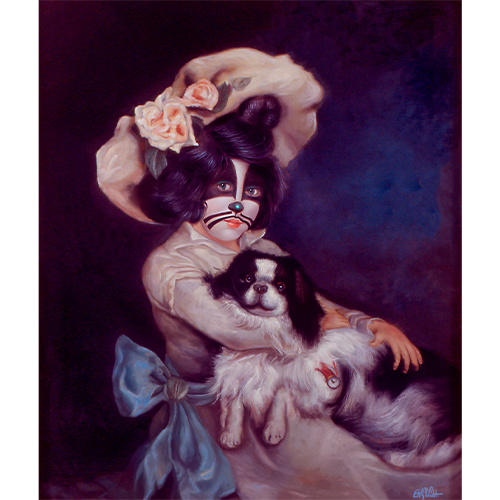
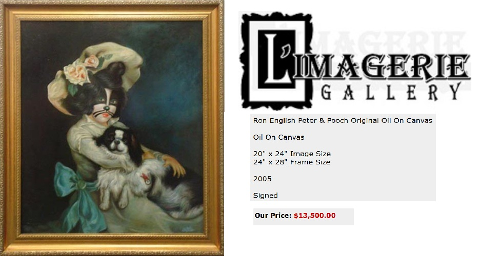
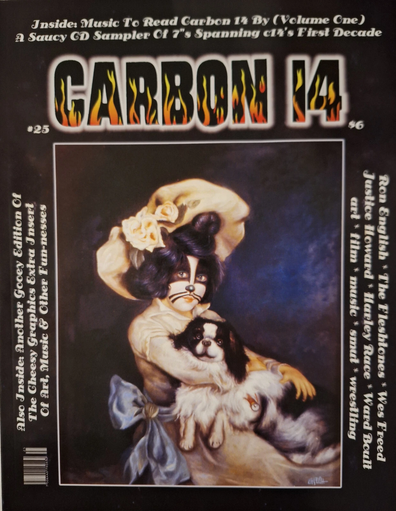
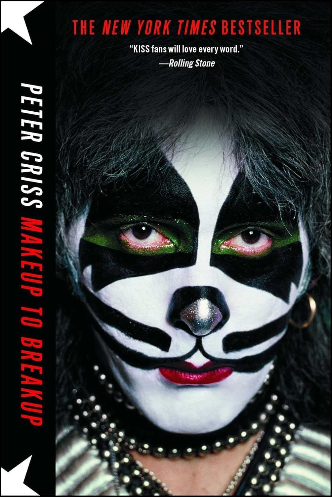

Literature
Ron English, Son of Pop: Ron English Paints His Progeny (San Francisco, California: 9mm Books and The Shooting Gallery, 2007), p. 61. ISBN 978-0976632511.
Carbon 14, no. 25, 2005 fanzine; cover reproducing Peter and Pooch.
Notes
This work references Harry Humphrey Moore’s Best of Friends.
This painting references Peter Criss of the band KISS in his signature makeup.
The work appears on L’Imagerie Gallery’s artwork page for Peter & Pooch.
The image appears on the cover of Carbon 14, no. 25.
Ancillary Documentation
The following materials document the visual/source references, gallery listing, publication cover use, and wider online circulation of the work.




Selected Online Circulation
Selected examples of the work’s online circulation, reproduction, or discussion. This list is not exhaustive; it is intended to document representative appearances of the image beyond formal exhibition and publication records.